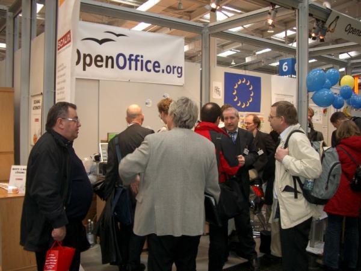
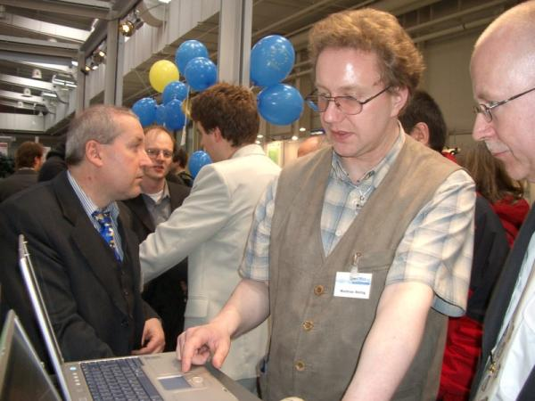

CeBIT 2005Mit der Betaversion von OpenOffice.org 2.0 im Gepäck durfte das Team von de.OpenOffice.org natürlich auf der CeBIT 2005 in Hannover nicht fehlen. Vom 10. März bis zum 16. März 2005 demonstrierte das OpenOffice.org-Team auf dem Messestand im OpenBooth-Bereich des LinuxParks die Neuerungen des kommenden Major Releases und gab den zahlreichen Besuchern bereitwillig Auskunft. Auf gleich drei verschiedenen Plattformen (Windows, Linux und MacOS) wurde sowohl die für den Produktiv-Einsatz empfohlene Version 1.1.4 vorgestellt als auch ein Blick in die Zukunft auf die Version 2.0 ermöglicht. Vielen Dank an das unermüdliche Messeteam vor Ort: Thomas Krumbein, Jacqueline Rahemipour, Mathias Röllig, Andreas Mantke, Andre Schnabel und Thomas Keup. Wie erwartet bezogen sich viele Fragen der Besucher auf die kommende Version und insbesondere auf den Erscheinungstermin und das neue Datenbank-Modul. Von großem Interesse war auch die bereits verfügbare Literatur zu OpenOffice.org und wie auch schon auf den vorherigen Messen die PrOOo-Box. Einige Besucher sind dem Ruf gefolgt, das deutsche Projektteam aktiv zu unterstützen, sei es als Entwickler für den Mac-Port oder als Helfer bei den Beta-Tests. Viele Besucher brachten sehr detaillierte Fachfragen mit, betreffend die einzelnen Module, die Kompatibilität zu MS Office-Dokumenten oder zu Makros (oder allgemeiner API-Anbindung). Dank der Klasse-Messemannschaft sind kaum Fragen offen geblieben. Darüber hinaus gab es viele interessante Gespräche mit Unternehmen, die OpenOffice.org bereits erfolgreich einsetzen bzw. sich mit dem Gedanken eines Umstiegs tragen. Am angenehmsten waren natürlich die Besucher, die "nur mal kurz vorbeikommen und ein Lob loswerden wollten". Davon gab es etliche und das jeden Tag. Im LinuxForum standen zwei interessante Vorträge zu OpenOffice.org auf dem Programm. Am Samstag zog Mathias Röllig einen Vergleich "OpenOffice.org vs. Access", erläuterte dabei das neue Datenbank-Modul Base und Migrationsmöglichkeiten von Access zu OpenOffice.org. Am Sonntag gingen Jacqueline Rahemipour und Thomas Keup auf "OpenOffice.org im Business-Einsatz" ein und stellen Fallstudien, konkrete Szenarien in Unternehmen sowie Migrationsstrategien vor. Die Vorträge sowie weitere Bilder von OpenOffice.org auf der CeBIT 2005 finden Sie hier. Die Fotos sind dem Projekt von Jacqueline Rahemipour zur Verfügung gestellt worden. Außerhalb des Projektes ist die Nutzung nur mit ausdrücklicher Genehmigung der Fotografin und der abgebildeten Personen zulässig. |
|